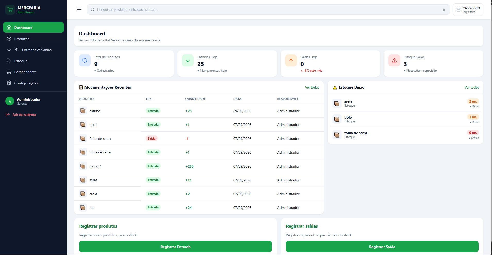

Projetos Relevantes

Projeto Frontend.io
html,css,js
Este projecto foi um trabalho final do meu trajecto em programacao web , onde foi selecionado ou escolhido um site no frontend.io e tinha uma missao de fazer uma pagina parecida ou identica...
ver mais
Este projecto me ajudou a saber a dimensionar as imagens de forma responsavel , usar os tipos e tamanhos de fontes , sem faltar as tecnologias Flrebox e Grid Layout.

Projeto dashboard
Html,Css,Js e Php ,MySQL
Aqui temos um projecto que trata de um painel de gerenciamento e controle de produtos de uma determinada empresa ou negocio...
ver mais
O projecto conta com um frontend criado com Html , Css e Javascript e por tras conta com um backend de PHP e MySql

Projecto formulario
Html ,Css ,Php , MySql
Este projecto foi um desafio para armazenar dados do usuario que desse uma entrada num formulario duma pagina...
ver mais
Os dados sao simulados e armazenados num banco de dados local(localhost) o unico problema seria se a maquina ou o servidor ficasse offline.

Projeto BoladasOnline
Html, Css, Js, Php,MySQL
Estamos diante de uma pagina web que quase virara uma aplicacao web pelo simples de fornecer uma vaiedade de produtos que no entanto sao infomativos.
ver mais
Este projecto me ajudou a saber centralidar , armazenar informacaoes ente usuario e o vendedor , as informacoes da pagina contato sao armazenados num banco de dados online.